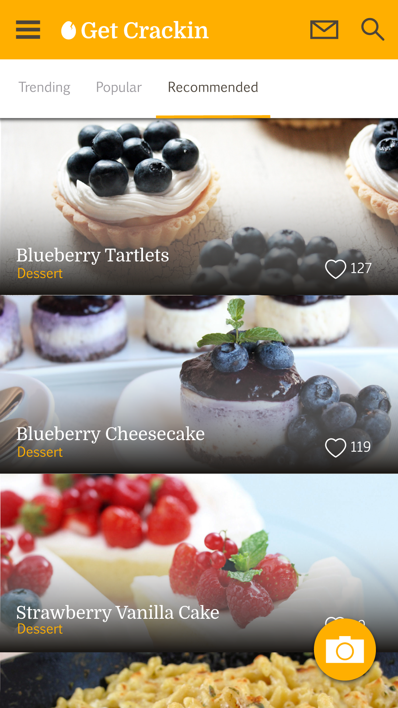
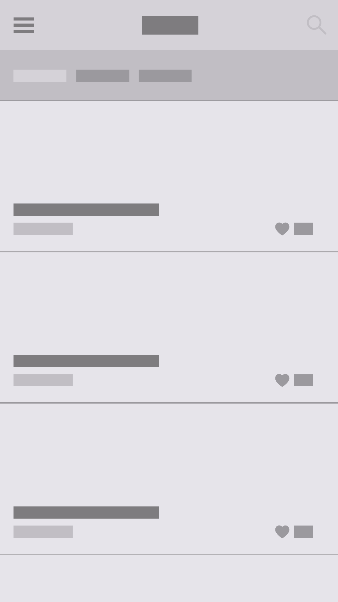
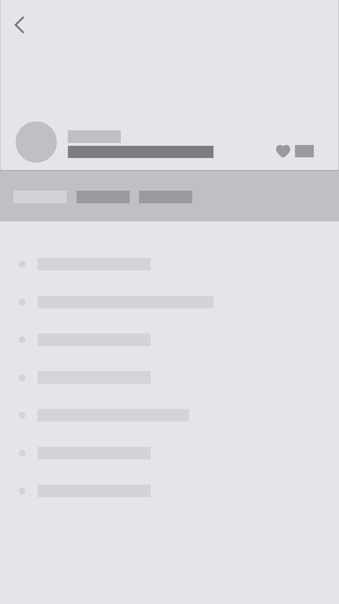
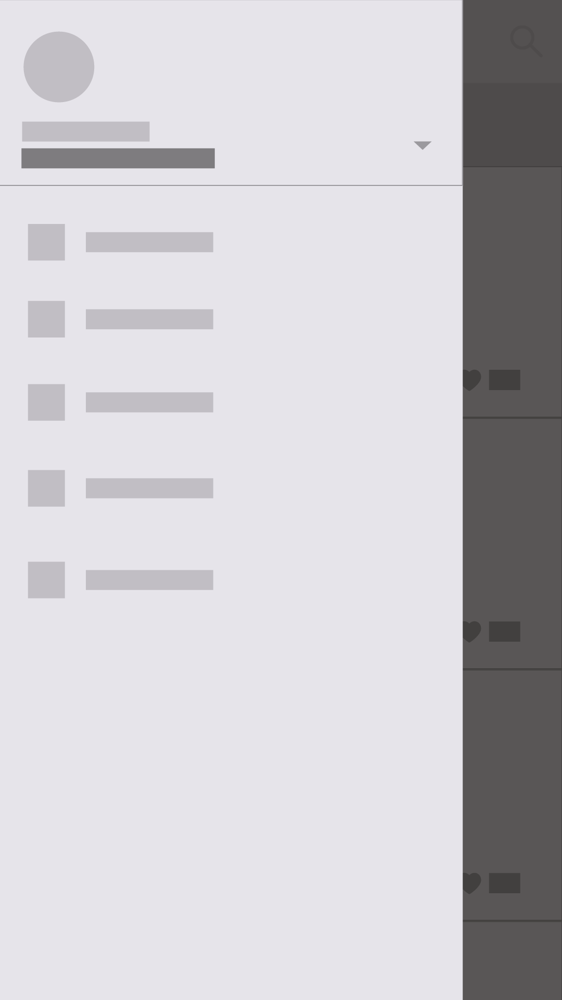

Get Crackin
Mobile App Design Concept (Work In Progress) | 2016
A recipe app concept that:
- Allows the user to search for popular recipes
- Provides a digital recipe box for both handwritten and digital recipes
- Allows the user to take a picture of a handwritten recipe to publish or share with friends
Wireframes as part of my process.
  Made in Adobe Illustrator CS6.